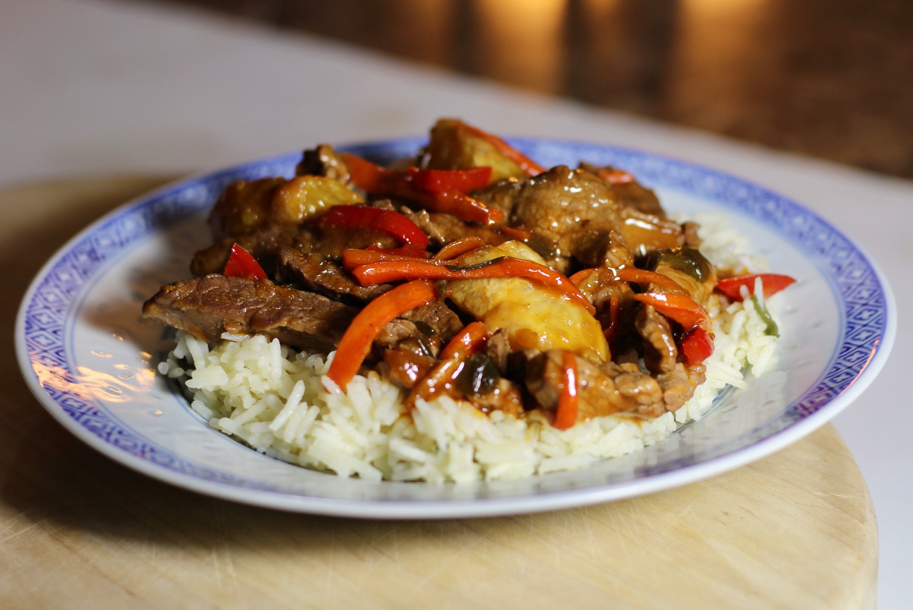

Orange Beef

Description
This sesame-orange beef and veggie stir-fry is a flavorful weeknight dinner that's sure to please the whole family.
Ingredients
Sauce
- 3 Oranges
- 3⁄4Cup Water
- 1⁄2Cup Long Grain Brown Rice
- 1⁄4Cup Low Sodium Beef Broth
- 2 Tablespoons Low-Sodium Soy Sauce
- 2 Tablespoons Chili-Garlic Sauce
- 2 Tablespoons Low-Sugar Marmalade
- 1 Teaspoon Toasted Sesame Oil
- 1⁄4Teaspoons Salt
- 1 Tablespoon Cornstarch
Stir Fry
- 3⁄4Pounds Beef Shoulder Tender
- 2 Teaspoons Vegetable Oil
- 1 Carrot
- 6 Green Onions
- 1 Large Red Bell Pepper
- 6 Garlic Cloves
- 1 Tablespoon Grated Ginger
- 1 Tablespoon Toasted Sesame Seeds
Steps
- Remove 1 tablespoon zest and 1⁄4 cup juice from 1 orange. Peel and section remaining 2 oranges.
- Bring water and brown rice to a boil in a saucepan. Reduce heat to medium-low, cover, and simmer until rice is tender and liquid has been absorbed, 45 to 50 minutes.
- Stir together zest, orange juice, broth, soy sauce, chili-garlic sauce, marmalade, sesame oil, and salt in a small bowl. Whisk in cornstarch.
-
Coat a wok or large nonstick skillet with cooking spray. Heat over medium-high heat. Stir-fry beef until browned, 2 to 3 minutes.
Transfer to a bowl. Add vegetable oil and carrot to the wok; stir-fry for 3 to 4 minutes. Add green onions and bell pepper; stir-fry for 2 to 3 minutes more. Add garlic and ginger; stir-fry for 30 seconds more.
- Return beef to the wok. Stir cornstarch mixture, then add to the wok. Cook, stirring, until thickened and bubbling. Add orange sections; cook, stirring, for 1 minute more.
- Divide rice among 4 plates; top with beef mixture and sprinkle with sesame seeds.